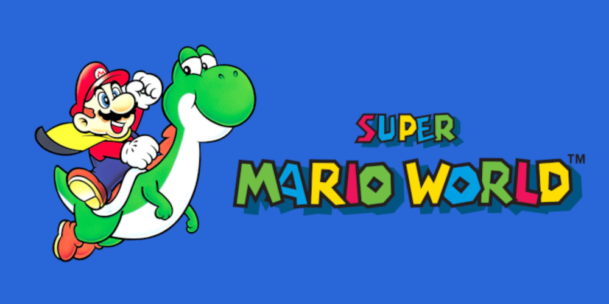

Super Mario World, originalmente chamado no Japão de Super Mario Bros. 4, é um jogo eletrônico de plataforma desenvolvido pela Nintendo Entertainment Analysis & Development e publicado pela Nintendo, em 1990, para o console Super Nintendo Entertainment System (SNES).
A história segue a jornada de Mario para salvar a Princesa Toadstool e a Dinosaur Land do antagonista Bowser e de seus capangas, os Koopalings. A jogabilidade é semelhante à dos jogos anteriores da série Super Mario: os jogadores controlam Mario ou seu irmão Luigi através de uma série de fases, cujo objetivo é alcançar um portão gigante em seu final. Super Mario World introduz Yoshi, um dinossauro que pode comer inimigos, bem como ganhar habilidades comendo cascas de Koopa Troopas.
O desenvolvimento de Super Mario World foi liderado pelo diretor Takashi Tezuka e pelo produtor e criador da série, Shigeru Miyamoto. É o primeiro jogo da franquia Mario desenvolvido especificamente para o SNES, e foi idealizado para aproveitar ao máximo as características técnicas do console.
A equipe de desenvolvimento teve mais liberdade, em comparação com as versões da série para o Nintendo Entertainment System (NES). Yoshi foi concebido desde o primeiro Super Mario Bros., mas não foi usado até o lançamento de Super Mario World devido à limitações do NES. A trilha sonora do jogo foi composta por Koji Kondo, que trabalhou em melodias semelhantes, porém mais variadas, para diferenciá-lo de seus antecessores.
Super Mario World é frequentemente considerado um dos melhores jogos da série Mario, e citado como um dos melhores jogos eletrônicos já feitos. É o jogo mais vendido do SNES e um dos jogos mais vendidos de todos os tempos, com mais de vinte milhões de unidades comercializadas em todo o mundo. Seu sucesso levou a uma série de televisão animada com o mesmo nome e uma prequela, Yoshi's Island, lançada inicialmente em agosto de 1995.

Foi relançado em várias ocasiões: fez parte da compilação de 1994 Super Mario All-Stars + Super Mario World para o SNES; foi relançado para o Game Boy Advance sob o título Super Mario World: Super Mario Advance 2 em 2001, no Virtual Console para os consoles Wii, Wii U e New Nintendo 3DS entre os anos de 2006 e 2016, e no catálogo do Super NES Classic Edition em 2017. Desde 2019, o jogo está disponível no Nintendo Switch através do serviço Nintendo Switch Online.